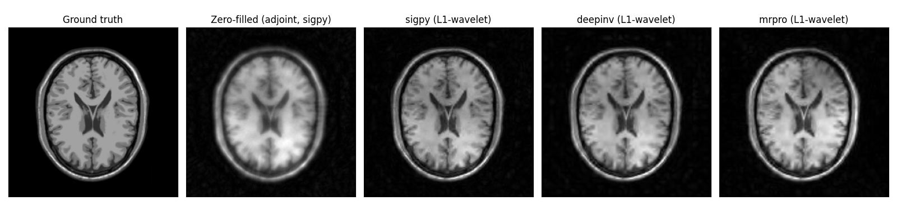

Note
Go to the end to download the full example code.
End-to-end CS reconstruction with sigpy, deepinv and mrpro#
PyGROG ships native adapters for the full preprocessing chain:
coil_compress(),coil_compress(),coil_compress()nlinv_calib(),nlinv_calib(),nlinv_calib()GrogInterpolator,GrogInterpolator,GrogInterpolator
plus operator wrappers for each framework’s solver:
GrogLinop (sigpy),
GrogLinearPhysics (deepinv) and
GrogLinearOp (mrpro).
Every adapter speaks the native shape convention of its target
framework, so the same noncartesian acquisition is fed to each pipeline
in its preferred container — numpy.ndarray for sigpy, a
(B, n_coils, n_samples) torch.Tensor for deepinv and a
mrpro.data.KData for mrpro — without any manual rearrangement.
For each framework we run the full chain
coil_compress → nlinv_calib → GrogInterpolator → L1-wavelet FISTA
starting from the same raw multi-coil 16-arm spiral acquisition of a T1 BrainWeb slice. This is an interoperability showcase, not a benchmark.
import numpy as np
import torch
import matplotlib.pyplot as plt
from brainweb_dl import get_mri
from mrinufft import get_operator, initialize_2D_spiral
from mrinufft.density import voronoi
sigpy pipeline#
Every step works on plain numpy.ndarray objects.
coil_compress()accepts the standard sigpy(n_coils, n_samples)flat layout and returns a compressed array of the same flat layout together with the projection matrix.nlinv_calib()takes that compressed k-space plus the noncartesian trajectory and runs pygrog’s NLINV self-calibration, returning(n_v, *shape)coil sensitivities.GrogInterpolatormirrors the basepygrog.calib.GrogInterpolatorAPI but speaks numpy in/out;interpolatereturns the sparse k-space and the planning object needed bySparseFFT.GrogLinopfinally wraps the operator as asigpy.linop.Linopfor use insideLinearLeastSquares.
print("\n[sigpy] coil_compress → nlinv_calib → GROG → L1-wavelet FISTA")
import sigpy as sp
from pygrog.interop import GrogLinop
from pygrog.interop import sigpy as pg_sigpy
from pygrog.operator import SparseFFT
# 1. Coil compression: (n_coils, n_samples) → (n_v, n_samples).
ksp_s_compressed, _vh_s = pg_sigpy.coil_compress(kspace_raw, n_compressed)
ksp_s_arms = ksp_s_compressed.reshape(n_compressed, n_shots, n_read)
# 2. NLINV self-calibration on a 24x24 patch. ``ret_cal=True`` returns
# both the coil sensitivity maps *and* the synthesised Cartesian
# calibration k-space patch needed by GROG — no need to fabricate one.
smaps_s, calib_s = pg_sigpy.nlinv_calib(
ksp_s_compressed,
coords.reshape(-1, 2),
shape,
cal_width=24,
max_iter=12,
ret_cal=True,
)
# 3. GROG planning + interpolation — calibration patch comes straight
# from NLINV.
grog_s = pg_sigpy.GrogInterpolator(
coords, shape, kernel_width=2, oversamp=1.25, image_shape=shape
)
grog_s.calc_interp_table(calib_s, lamda=0.01, precision=1)
sparse_s, plan_s = grog_s.interpolate(ksp_s_arms)
sparse_s_t = torch.as_tensor(sparse_s)
# pre_weights is flat (n_samples,); reshape to natural to align with the
# natural-shape sparse output ``(n_coils, *natural_shape)``.
pre_w = plan_s.pre_weights.reshape(*plan_s.natural_shape)
sparse_s_t = sparse_s_t * pre_w
# 4. SparseFFT + sigpy linop wrapper.
op_s = SparseFFT(plan=plan_s, smaps=smaps_s)
img_zf = op_s.adjoint(sparse_s_t).numpy()
# 5. L1-wavelet FISTA via ``LinearLeastSquares``.
M_sigpy = GrogLinop(op_s).H
W_sigpy = sp.linop.Wavelet(shape, axes=(-2, -1), wave_name="db4", level=3)
A_sigpy = M_sigpy * W_sigpy.H
y_sigpy = sparse_s_t.reshape(n_compressed, op_s.indices.shape[0]).numpy()
proxg = sp.prox.L1Reg(W_sigpy.oshape, lamda=5e-4)
wav_hat = sp.app.LinearLeastSquares(
A=A_sigpy,
y=y_sigpy,
proxg=proxg,
max_iter=80,
show_pbar=False,
).run()
img_sigpy = np.abs(W_sigpy.H(wav_hat))
print(f" done — output shape {img_sigpy.shape}")
[sigpy] coil_compress → nlinv_calib → GROG → L1-wavelet FISTA
done — output shape (256, 256)
deepinv pipeline#
Native containers are batched torch.Tensor objects.
coil_compress()accepts a(B, n_coils, n_samples)k-space tensor and returns the compressed tensor with the same batched layout.nlinv_calib()runs pygrog’s NLINV under the hood and returns(B, n_v, *shape)coil sensitivities, ready to feed intoSparseFFT.GrogInterpolatorconsumes a(B, n_coils, *spatial)tensor and emits a(B, n_coils, *natural, kw)tensor plus the GROG plan.GrogLinearPhysicswraps the operator as adeepinv.physics.LinearPhysicsso the standardoptim_buildersolvers can drive the inverse problem directly.
print("\n[deepinv] coil_compress → nlinv_calib → GROG → L1-wavelet FISTA")
from deepinv.optim.prior import WaveletPrior
from deepinv.optim.data_fidelity import L2
from deepinv.optim.optimizers import optim_builder
from pygrog.interop import GrogLinearPhysics
from pygrog.interop import deepinv as pg_deepinv
ksp_d_flat = torch.as_tensor(kspace_raw).unsqueeze(0) # (1, n_coils, n_samples)
# 1. Coil compression on the batched tensor.
ksp_d_compressed, _vh_d = pg_deepinv.coil_compress(ksp_d_flat, n_compressed)
ksp_d_arms = ksp_d_compressed.reshape(1, n_compressed, n_shots, n_read)
# 2. NLINV self-calibration (returns smaps + calibration k-space patch).
smaps_d, calib_d = pg_deepinv.nlinv_calib(
ksp_d_compressed,
coords.reshape(-1, 2),
shape,
cal_width=24,
max_iter=12,
ret_cal=True,
) # smaps: (1, n_v, H, W); calib: (n_v, *cal_shape)
# 3. GROG using the NLINV-derived calibration patch.
grog_d = pg_deepinv.GrogInterpolator(
coords, shape, kernel_width=2, oversamp=1.25, image_shape=shape
)
grog_d.calc_interp_table(calib_d[0], lamda=0.01, precision=1)
sparse_d, plan_d = grog_d.interpolate(ksp_d_arms) # (1, n_v, *natural, kw)
sparse_d = sparse_d * plan_d.pre_weights.reshape(*plan_d.natural_shape).to(
sparse_d.dtype
)
# 4. SparseFFT + deepinv physics wrapper.
op_d = SparseFFT(plan=plan_d, smaps=smaps_d[0])
# 5. L1-wavelet FISTA via ``optim_builder``.
physics = GrogLinearPhysics(op_d)
y_di = sparse_d.reshape(1, n_compressed, op_d.indices.shape[0]).clone()
x_dagger = physics.A_adjoint(y_di) # (1, 1, H, W)
with torch.no_grad():
v = torch.randn_like(x_dagger)
for _ in range(15):
v = physics.A_adjoint(physics.A(v))
v = v / (v.norm() + 1e-12)
lipschitz = (physics.A_adjoint(physics.A(v)).norm() / (v.norm() + 1e-12)).item()
prior = WaveletPrior(wv="db4", wvdim=2, level=3, is_complex=True)
prior.explicit_prior = False
data_fidelity = L2()
params = {"stepsize": 0.9 / lipschitz, "lambda": 1e-2, "a": 3}
recon = optim_builder(
iteration="FISTA",
prior=prior,
data_fidelity=data_fidelity,
early_stop=False,
max_iter=80,
params_algo=params,
verbose=False,
)
x_di = recon(y_di, physics)
img_deepinv = np.abs(x_di.squeeze().detach().cpu().numpy())
print(f" done — output shape {img_deepinv.shape}")
[deepinv] coil_compress → nlinv_calib → GROG → L1-wavelet FISTA
done — output shape (256, 256)
mrpro pipeline#
Native container is mrpro.data.KData.
coil_compress()dispatches to mrpro’s own PCA-basedKData.compress_coils(), returning a newKDatawith reduced coil dimension.nlinv_calib()extracts the trajectory and data tensor from theKData, runs pygrog’s NLINV and returns a(n_v, z=1, y, x)smap tensor in mrpro’s spatial ordering.GrogInterpolatorconsumes aKData, fuses the GROG kernel-width axis intok0and snaps the trajectory onto the Cartesian grid — so the output is still a fully validKDataready for downstream operators.GrogLinearOpfinally exposes the operator as anmrpro.operators.LinearOperatorthat composes directly withWaveletOpand thepgd()proximal-gradient solver.
print("\n[mrpro] coil_compress → nlinv_calib → GROG → L1-wavelet FISTA")
from mrpro.algorithms.optimizers import pgd
from mrpro.data import KData, KHeader, KTrajectory, SpatialDimension
from mrpro.operators import WaveletOp
from mrpro.operators.functionals import L1NormViewAsReal, L2NormSquared
from pygrog.interop import GrogLinearOp
from pygrog.interop import mrpro as pg_mrpro
# Build a minimal KData wrapping the raw acquisition.
kx_t = torch.as_tensor(coords[..., 1]).reshape(1, 1, 1, n_shots, n_read)
ky_t = torch.as_tensor(coords[..., 0]).reshape(1, 1, 1, n_shots, n_read)
kz_t = torch.zeros_like(kx_t)
traj = KTrajectory(kz=kz_t, ky=ky_t, kx=kx_t)
data_t = (
torch.as_tensor(kspace_raw).reshape(n_coils_full, 1, n_shots, n_read).unsqueeze(0)
)
spatial = SpatialDimension(z=1, y=shape[0], x=shape[1])
header = KHeader(
recon_matrix=spatial,
encoding_matrix=spatial,
recon_fov=SpatialDimension(z=1.0, y=1.0, x=1.0),
encoding_fov=SpatialDimension(z=1.0, y=1.0, x=1.0),
)
kdata = KData(header=header, data=data_t, traj=traj)
# 1. Coil compression — dispatches to mrpro's PCA compressor.
kdata = pg_mrpro.coil_compress(kdata, n_compressed)
# 2. NLINV self-calibration through pygrog (returns smaps + cal patch).
smaps_m, calib_m = pg_mrpro.nlinv_calib(
kdata,
cal_width=24,
max_iter=12,
ret_cal=True,
) # smaps: (n_v, 1, H, W); calib: (n_v, *cal_shape)
# 3. GROG — interpolation snaps the trajectory onto the grid and fuses
# the kernel-width axis into ``k0``; calibration patch comes from NLINV.
grog_m = pg_mrpro.GrogInterpolator(kdata, kernel_width=2, oversamp=1.25)
grog_m.calc_interp_table(calib_m, lamda=0.01, precision=1)
kdata_grog, plan_m = grog_m.interpolate(kdata)
# 4. SparseFFT + mrpro linop wrapper.
op_m = SparseFFT(plan=plan_m, smaps=smaps_m[:, 0])
# 5. L1-wavelet FISTA via ``pgd``.
mrpro_op = GrogLinearOp(op_m)
A_mr = mrpro_op.H
wavelet_op = WaveletOp(domain_shape=shape, dim=(-2, -1), wavelet_name="db4", level=3)
acq = A_mr @ wavelet_op.H
# k-space layout from the adapter: (other=1, coils, k2=1, k1, k0*kw)
y_mr = kdata_grog.data.squeeze(0).squeeze(1) # (coils, k1, k0*kw)
y_mr = y_mr * plan_m.pre_weights.to(y_mr.dtype).reshape(1, n_shots, -1)
f = 0.5 * L2NormSquared(target=y_mr, divide_by_n=False) @ acq
g = 1e-3 * L1NormViewAsReal(divide_by_n=False)
(init_wave,) = wavelet_op(torch.zeros(shape, dtype=torch.complex64))
stepsize = 0.9 / lipschitz
(wave_hat,) = pgd(
f=f,
g=g,
initial_value=init_wave,
stepsize=stepsize,
max_iterations=80,
backtrack_factor=1.0,
)
(img_mr_t,) = wavelet_op.H(wave_hat)
img_mrpro = np.abs(img_mr_t.detach().cpu().numpy())
print(f" done — output shape {img_mrpro.shape}")
[mrpro] coil_compress → nlinv_calib → GROG → L1-wavelet FISTA
done — output shape (256, 256)
Display#
def _norm(x):
return x / (x.max() + 1e-12)
fig, axes = plt.subplots(1, 5, figsize=(16, 4))
panels = [
("Ground truth", _norm(image_np)),
("Zero-filled (adjoint, sigpy)", _norm(np.abs(img_zf))),
("sigpy (L1-wavelet)", _norm(img_sigpy)),
("deepinv (L1-wavelet)", _norm(img_deepinv)),
("mrpro (L1-wavelet)", _norm(img_mrpro)),
]
for ax, (title, im) in zip(axes, panels, strict=False):
ax.imshow(im, cmap="gray", origin="lower", vmin=0.0, vmax=1.0)
ax.set_xticks([])
ax.set_yticks([])
ax.set_title(title)
plt.tight_layout()
plt.show()

/home/mcencini/pygrog-project/pygrog/examples/example_interop.py:398: UserWarning: FigureCanvasAgg is non-interactive, and thus cannot be shown
plt.show()
Total running time of the script: (0 minutes 15.269 seconds)